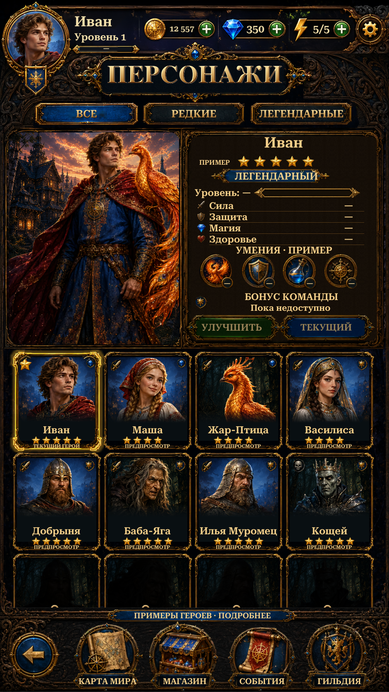

Updated Characters to the shared Home player header and consistent button press feedback. Preserved the refined portraits, original frames and Ivan-only current-hero highlight.
Views below are actual Unity Play Mode captures with isolated saves and simulated phone sizes/safe areas. Coins, gems and energy show saved values. Character browsing remains a preview: upgrades and hero switching are unavailable, and browsing does not spend resources. Locked cards remain scrollable.

Changes and validation · Remaining reference differences · Verification results